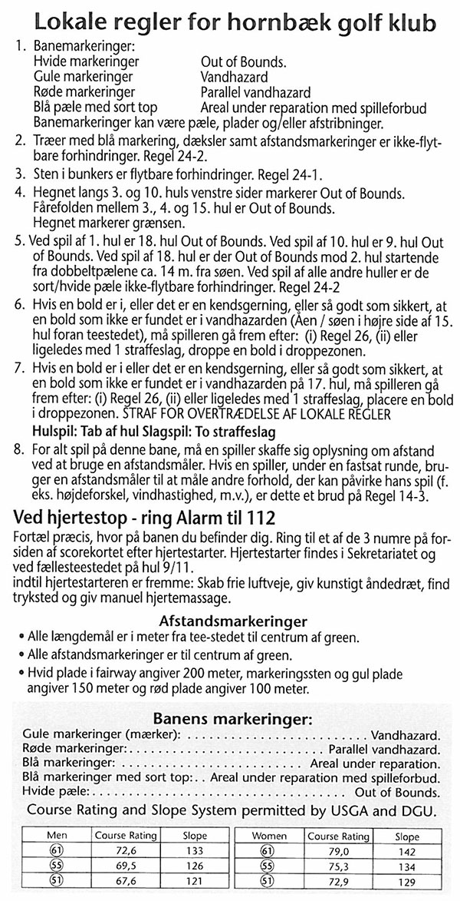

<div class="pages">
  <div data-page="greenkeeper-team" class="page navbar-fixed toolbar-fixed" >
    <div class="navbar">
      <div class="navbar-inner">
        <div class="left">
          <a href="#" class="link back icon-only"><i class="icon icon-back"></i></a>
          <!-- <a href="#" class="back link icon-only"><i class="icon icon-back"></i></a> -->
        </div>
        <div class="center">Greenkeeper Team</div>
        <!-- <div class="right"></div> -->
        <div class="right">
        </div>
      </div>
    </div>
    <div class="page-content" style="padding-top:45px;">
       <div class="content-block">
          <p>Chefgreenkeeper Søren Petersen</p>
          <p>
            
            Født: 06-12-1972<br />
            Uddannelse: Ledelses-uddannet, Udlært greenkeeper, Udlært mekaniker.<br />
            Ansat i HGK: 01-04-2004<br />
            Golf: Medlem i Hornbæk siden 1999<br />
            HCP: 3,3<br />
            CV: Mekaniker år 1989-2004.
          </p>
          <center></center>
        </div>
    </div>
    </div>
    </div>
  </div>
</div>
